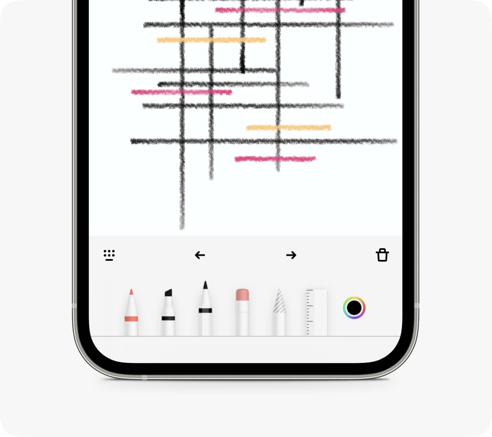
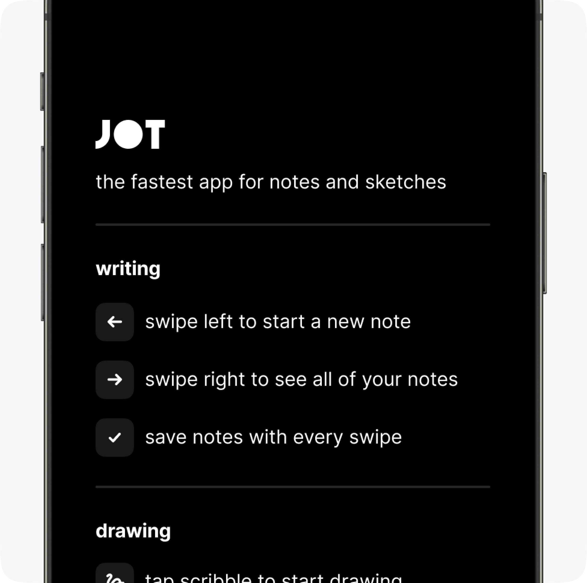
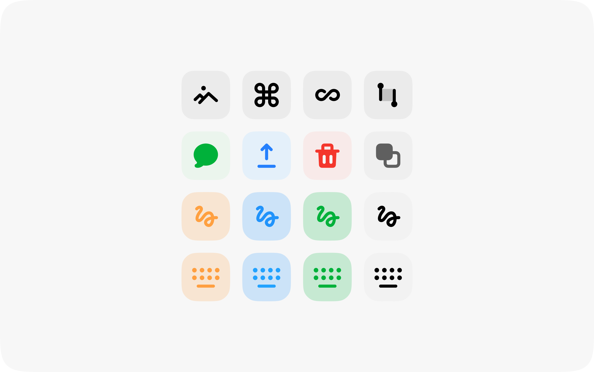

Arjun Mahanti
A midwesterner in Brooklyn building, designing, and crafting products.
About
Jot was the first iOS app I ever built — all the way back in 2013. It was designed to solve the problem of having a quick idea or note and not being able to easily toss it into a notepad and move on. In an effort to reduce taps to start new notes, Jot always starts on a fresh page and simple swipe gestures let you archive and view notes.
During the pandemic in 2020, I took the time to learn SwiftUI and rebuild the app from the ground up which included folding in another project of mine — Napkin, which was Jot for drawing.

Napkin was a fun addition to Jot which enabled me to quickly sketch out concepts or UI in the middle of the night.

The new user experience meant to quickly educate users on the interaction paradigm.

Icons and themed variations for different tools.